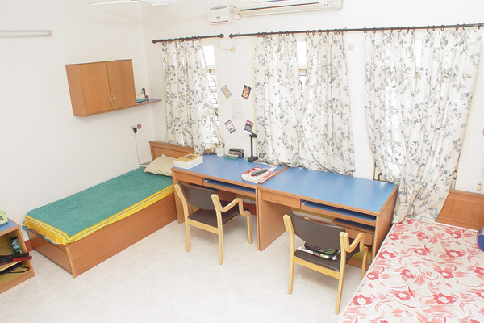
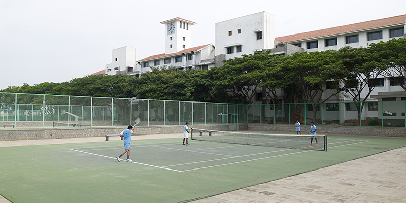
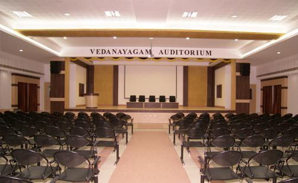

The Bannari Amman Institute of Technology is an autonomous engineering college located in Sathyamangalam, Erode district, Tamil Nadu, India. It is under the roof of Bannari Amman Group (BAG) which is one of the largest Industrial Conglomerates in South India with a wide spectrum of manufacturing, trading and service activities. It was founded by the Bannari Amman Group in 1996 and is affiliated to Anna University. The institute offers 15 undergraduate, 15 postgraduate programmes in Engineering and Management studies. All the departments of Engineering and Technology are recognized by Anna University, Chennai to offer Ph.D. programmes. The institution is ISO 9001:2000 certified for its quality education, and most of the eligible courses are accredited by National Board of Accreditation (NBA),[1] New Delhi and NAAC with "A" Grade. The institute received the best Engineering College Award from Indian Society for Technical Education in the year 2009. The institute was also awarded the Silver Medal for Best Overall Industry-Linked Engineering College from AICTE-CII National Survey on Industry-Linked Engineering Institutes in 2012.
Admission for BE/B.Tech is through Tamil Nadu Engineering Admission (TNEA) ranking based on 12th standard exam results facilitated by Anna University. ME/M.Tech admissions are based on ranking in TANCET examination conducted by Anna University. The Counselling code of the Institution is 2702.
The five-storeyed, air-conditioned and computerized library is well-stacked. 83000 Volumes, 400 National and International Journals, 6500 CD-ROMs, a Digital Library with 6000 e-journals, 274 NPTEL and 166 NITTTR video courses are part of the resources. BIT is an Institutional member of the British Council Library, Chennai, DELNET, New Delhi and INDEST Consortium, New Delhi.
The institute has four hostels for male students and five hostels for female students. All hostels are fully furnished and single, double and four occupancy rooms are available.
Hostel Details:
Gents Hostel - 2500 inmates
Ladies Hostel - 2200 inmates
Other Facilities in Hostel: Dining Halls, Mini Cine Theatres, Indoor Courts for Shuttle & Table Tennis
There are first - rate sports and leisure facilities on campus. Courts with acrylic surface for tennis, basketball and volleyball; playing fields for football, hockey, cricket and kabaddi.
An fully air-conditioned indoor vedanayagam auditorium with a capacity to seat 750 students.
An fully air-conditioned main auditorium with a capacity to seat 2500 student's.
| Social media | Link |
|---|---|
 |
|
| Youtube | |
| Google+ | |
 |